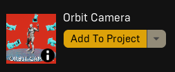
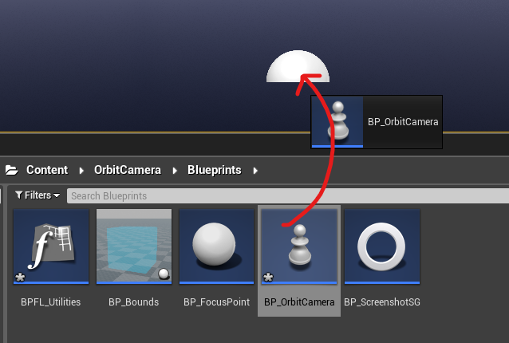
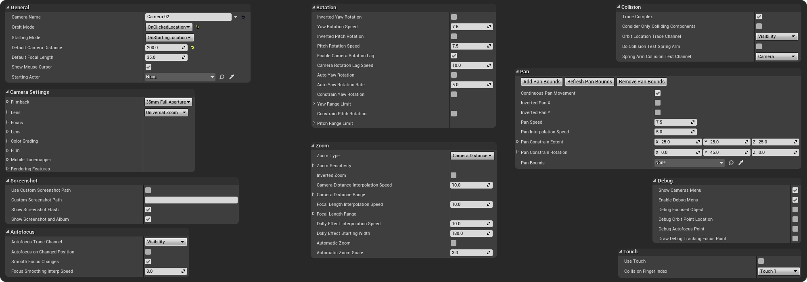
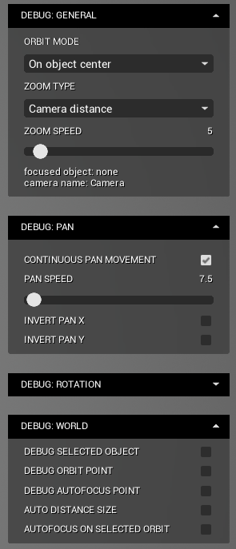
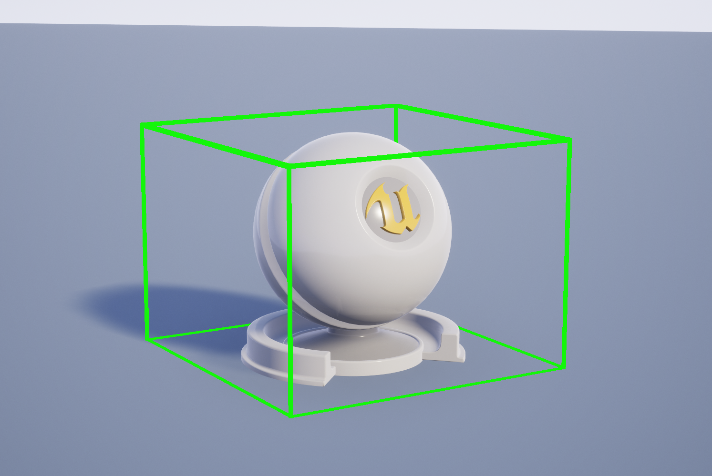
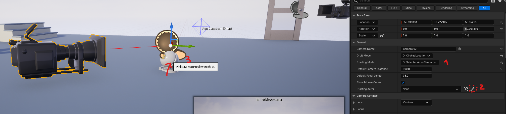
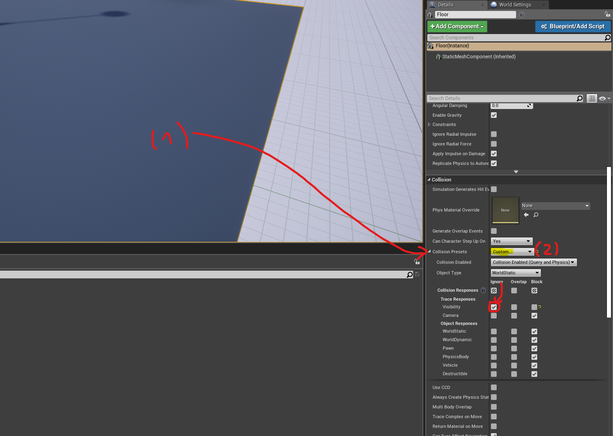
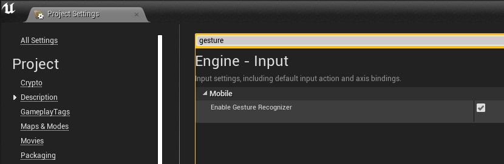
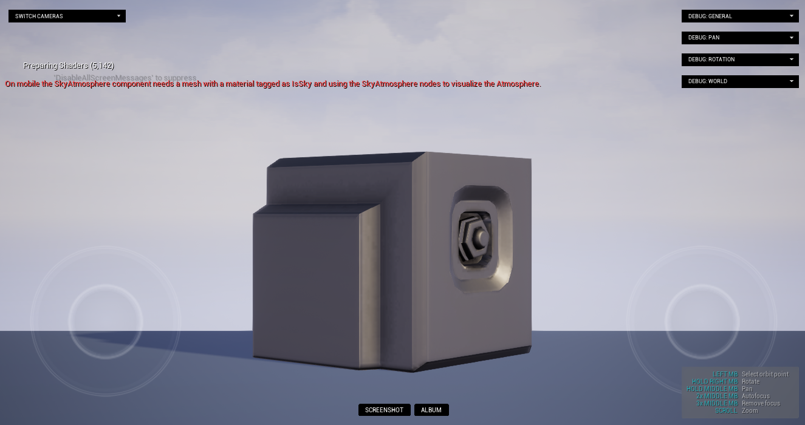

ORBIT CAMERA | version 1.0
Last mod.: 2024-01
Introduction
This asset enables the visualization of objects through orbital movement. You have the flexibility to choose the behavior: orbit under click location, around the object's center, or around its original pivot. The asset provides a range of variables for customization. Try the web demo at this link or download the Windows version for free at this link.
Getting started
Unreal library
First of all, download the Orbit Camera asset and add it to your project. You can find it in your Unreal Engine Library.

How to use
The orbit camera is a pawn class. That means it is controlled by a controller (any controller, you can use even the default controller, no need to setup it!).
Go to the Content → OrbitCamera → Blueprints → BP_OrbitCamera, drag and drop the BP_OrbitCamera into your level and that's all, after hitting play you'll control the orbit camera.

You may want to customize the orbit camera settings. The process to edit it is very simple: click over the orbit camera in the world, go to the details panel and you'll notice a lot of exposed variables to customize.

Each variable has a tooltip with a description that tells you what it does (hover the mouse cursor over the variable). If you want to test most of the variables at runtime, make sure to mark the variable bEnableDebugMenu as True and a menu will show up after you hit play.

With this menu you can change the settings at runtime and check how it impacts in the camera behavior. Take your time and tweak it!
Testing the demo level
After adding the asset to your project, you can test it by opening the L_Showcase map. It can be found at: Content → OrbitCamera → Demo → Maps.
Once in the map level, you can hit play and try out 4 cameras in the level. They're all the same camera class with different settings (you can customize these settings by clicking over the camera and checking the details panel).
Orbit mode
The main option in this asset is the orbit mode, found in the OrbitMode variable in the BP_OrbitCamera blueprint. You have four options: OnClickedLocation, OnObjectCenter, OnObjectPivot, OnStartLocationOnly.
-
OnClickedLocation: the camera will orbit the clicked (or touch, check the #Touch section) point. Surfaces are recognized if they have a collision response corresponding to the type specified in theOrbitLocationTraceChannelvariable. By default, this channel is set toVisibility. In the demo map, for example, the floor is marked to ignoreVisibilitytrace channels and the objects in the level are marked to block this channel. -
OnObjectCenter: the camera will orbit the object's center. Imagine a box in which your object fits perfectly in terms of height, width, and length. The center of the object will be the center of this imaginary box. You can visualize this imaginary box by toggling the 'bDebugFocusedObject' variable toTrue, either in the variables panel or directly in the debug menu widget.

-
OnObjectPivot: the camera will orbit around the object's pivot. Note that the pivot may coincide with the center of the object or not. -
OnStartLocationOnly: the camera will orbit the starting point, and it won't move to a different point (you can rotate and pan, unless you limit it).
Starting mode
The starting mode can help you align the camera initially. This variable (StartingMode, available in BP_OrbitCamera) can be combined with the StartingActor variable (available in the same blueprint) to focus on the center or pivot of a specific object.
To select the starting actor for a specific orbit camera, click over the orbit camera in the level, go to the details panel, select the starting mode and pick the starting actor as follows.

Limiting rotation
With the camera selected in the level, go to its details panel. In the Rotation section, you'll find two boolean variables: bConstrainYawRotation and bConstrainPitchRotation. Mark as True the axis that you want to limit (you can selected one or both).
Then, you just need to set the range limit below the boolean variable (YawRangeLimit and PitchRangeLimit). The min and max values are the relative rotation considering your current rotation. So if it is something like {-10, +10} in the Yaw axis, you'll be able to rotate +10 to the left and +10 to the right. The same idea is can be applied in the pitch axis.
Limiting pan
With the camera selected in the level, go to its details panel. In the Pan section, click on the Add Pan Bounds button. It will create a box around your current orbit location. You can edit it by increasing the PanConstrainRotation and PanContrainExtent variables (if you edit the rotation, make sure to hit the Remove Pan Bounds button and re-add it in the Add Pan Bounds button). Your camera will be limited and will be able to move within this box.
Zoom type
You can select different zoom types in the Zoom section (to find it, select the camera in the level and go to its details panel). The ZoomType variable will set the zoom type. You can edit its sensitivity in the ZoomSensitivity variable.
Ignoring collision
You have chosen the orbit mode OnClickedLocation, ObjectCenter, or ObjectPivot and wish to disable collision (in this case, identifying an object by click) for a specific object, such as the floor? To ignore an object in the Orbit Camera's click recognition, simply mark the collision channel of the corresponding object as Ignore in the collision channel present in the variable OrbitLocationTraceChannel within the BP_OrbitCamera. To do this:
- Click on the object in the world that you want to ignore.
- In the details panel, navigate to the
Collisionsection. - Under
Collision Presets, chooseCustom. - Right below, in the same panel, look for the trace channel present in the variable
OrbitLocationTraceChannel. By default, this channel is set tovisibility. In this example, simply markvisibilityasignore.

Touch setup
This asset can be used with touch devices. You'll need, however, enable some booleans settings as follows:
1. Enabling gestures
To use gestures like pinch, we need to enable the gesture recognizer in the project settings. To do this, click on Edit → Project Settings at the top bar. Search gesture and mark EnableGestureRecognizer as True.

2. Touch in BP_OrbitCamera
Open the BP_OrbitCamera. In the variables panel, mark bUseTouch as True. This ensures that the touch input will be used in the trace channels events.
3. Using touch
With these two settings, you will be able to use touch on supported devices such as mobiles. Using a two-finger pinch motion, you can zoom in and out. With two taps on the screen, you can focus on an object or a point (depending on the orbit mode you've selected). You can rotate either by swiping a finger on the screen or using the right analog stick. Finally, you can move the camera (pan) using the left analog stick.

Screenshots and album
You can take screenshots using the P key or the Screenshot button at the bottom center of the screen. You can check all the photos taken in the album by pressing G or the Album button at the bottom center of the screen.
It is possible to customize it as well by editing the W_ScreenshotAndAlbum widget or editing the keys in the BP_OrbitCamera blueprint (at Content → OrbitCamera → Blueprints folder).
You can edit both screenshot path and resolution. To edit the path, make sure to mark bCustomScreenshotPath variable as True. Then, you can set the custom path in two ways:
1) call the function SetScreenshotPath (for example in the begin play node) and pass your path as a parameter;
or
2) set the CustomScreenshotPath string variable with your custom path.
To edit the resolution open the GetScreenshotResolution function in the BP_OrbitCamera blueprint and edit the resolution return. By default, the screenshot resolution is the same as your application window size.
Variables
You can find the variables descriptions below. All the variables have a tooltip in the project (to check there, just hover over the variable!).
Variables
General variables
Variable |
Description |
Default value |
|---|---|---|
| CameraName | This camera name is displayed in the "Cameras" widget. | Camera |
| OrbitMode | The orbit mode defines the click behavior of this camera. If "OnClickedLocation", the camera will be placed under the clicked location; if "OnObjectCenter", the camera will get the object's center as the orbit point; if "OnObjectPivot", the camera will get the object location (note that it can be the same location as the object center if the pivot is in its center); if "OnStartLocationOnly" the camera will be fixed at the starting position (it won't move if you click anywhere). | OnObjectCenter |
| StartingMode | You can selected a starting mode for this camera. If "OnSelectedActorCenter" or "OnSelectedActorPìvot", make sure to select this actor in the "StartingActor" variable. | OnStartingLocation |
| DefaultCameraDistance | Starting camera distance. | 250.0 |
| DefaultFocalLength | Starting camera Focal Length. | 35.0 |
| bShowMouseCursor | If true, shows the mouse cursor | TRUE |
| StartingActor | Select an actor in the level combined with the "StartingMode" variable. You can, for example, orbit around a selected object. | None |
Camera Settings variables
Variable |
Description |
Default value |
|---|---|---|
| Lens | Camera lens settings. | Universal Zoom |
| Focus | Camera focus settings. | None |
| PostProcess | Camera post process settings. | (default post process values) |
Pan variables
Variable |
Description |
Default value |
|---|---|---|
| bContinuousPanMovement | If true, the pan movement will continous follow the mouse cursor direction. If false, the movement will stop once the mouse cursor stops. | TRUE |
| bInvertedPanX | If true, inverts the pan movement in the X axis. | FALSE |
| bInvertedPanY | If true, inverts the pan movement in the Y axis (Y axis in 2D space or Z axis in 3D space). | FALSE |
| PanSpeed | The greater this value, the faster the camera's pan movement. | 7.5 |
| PanInterpolationSpeed | The greater this value, the faster the interpolation in the camera pan. | 5.0 |
| PanConstrainExtent | The pan bounds extent. To add bounds, make sure to hit the "AddPanBounds" button in the details panel of your orbit camera in the world. | X=25, Y=25, Z=25 |
| PanConstrainRotation | Pan bounds rotation. | Roll=0, Pitch=45, Yaw=0 |
| PanBounds | Pan bounds, is valid if you've added, using the "AddPanBounds" button, bounds for the pan movement. | None (is autogenerated after hitting the "AddPanBounds" variable) |
Rotation variables
Variable |
Description |
Default value |
|---|---|---|
| bInvertedYawRotation | If true, inverts the yaw (left/right) rotation. | FALSE |
| YawRotationSpeed | The greater this value, the faster the speed of the rotation in the yaw (left/right) axis. | 75.0 |
| bInvertedPitchRotation | If true, inverts the pitch (up/down) rotation. | FALSE |
| PitchRotationSpeed | The greater this value, the faster the speed of the rotation in the pitch (up/down) axis. | 75.0 |
| bEnableCameraRotationLag | If true, enables the rotation lag (smooth rotation). | TRUE |
| CameraRotationLagSpeed | The greater this value, the greater is the rotation speed (less smoothness). | 10.0 |
| bAutoYawRotation | If true, will start an auto rotation on the yaw axis (left/right) using the "AutoYawRotationRate" variable's value as rotation rate. | FALSE |
| AutoYawRotationRate | Automatic yaw rotation rate. Uses this value to set the rotation rate speed if the "bAutoYawRotation" is true. | 5.0 |
| bConstrainYawRotation | If true, constrains the yaw (up/down) movement to the starting point until min/max set in the "YawRangeLimit" variable. | FALSE |
| YawRangeLimit | Sets the min and max yaw rotation if the "bContrainYawRotation" is true. | Min = -180, Max = 180 |
| bConstrainPitchRotation | If true, constrains the pitch (left/right) movement to the starting point until min/max set in the "PitchRangeLimit" variable. | FALSE |
| PitchRangeLimit | Sets the min and max pitch rotation if the "bContrainPitchRotation" is true. | Min = -89.9, Max = 89.9 |
Zoom variables
Variable |
Description |
Default value |
|---|---|---|
| ZoomType | Defines the zoom type: camera distance (spring arm target arm length), focal length or dolly zoom effect. | CameraDistance |
| ZoomSensitivity | Defines the zoom sensitivity for each zoom type. | CameraDistance=5, FocalLength=5, DollyZoomEffect=5 |
| bInvertedZoom | If true, inverts the zoom movement. | FALSE |
| CameraDistanceInterpolationSpeed | The greater this value, the faster the interpolation in the camera distance movement. | 10.0 |
| CameraDistanceRange | Sets a limit in the camera zoom (camera distance). | Min=50, Max=1000 |
| FocalLengthInterpolationSpeed | The greater this value, the faster the interpolation in the focal length (zoom) movement. | 10.0 |
| FocalLengthRange | Sets a limit in the camera zoom (focal length). | Min=10, Max=75 |
| DollyEffectInterpolationSpeed | The greater this value, the faster the interpolation in the dolly effect movement. | 10.0 |
| DollyEffectStartingWidth | Sets a starting value for the dolly effect. The greater this value, the bigger the distance is. | 180.0 |
| bAutomaticZoom | If true, adjusts the target arm length to visualize the entire object on screen. | FALSE |
| AutomaticZoomScale | Adjusts the automatic zoom scale. You may need to edit this for different focal lengths. | 3.0 |
Autofocus variables
Variable |
Description |
Default value |
|---|---|---|
| AutofocusTraceChannel | Defines the collision channel in order to find points to focus. | VISIBILITY |
| bAutofocusOnChangedPosition | If true, autofocus the lenses in the orbit point. | FALSE |
| bSmoothFocusChanges | If true, enables the autofocus smoothness in the focus changes. | TRUE |
| FocusSmoothingInterpSpeed | The greater this value, the faster the interpolation speed in the autofocus event. | 8.0 |
Screenshot variables
Variable |
Description |
Default value |
|---|---|---|
| bUseCustomScreenshotPath | If true, uses the "CustomScreenshotPath" variable as the default screenshot path. You can set it using the "SetScreenshotPath" function. | FALSE |
| CustomScreenshotPath | Use combined with "bUseCustomScreenshotPath" variable to save your screenshots in a custom path. | (empty) |
| bShowScreenshotFlash | If true, performs an white flash animation by calling a widget. | TRUE |
| bShowScreenshotAndAlbum | If true, shows the "screenshot" and "album" buttons at the bottom center of the screen. | TRUE |
Touch variables (make sure to check out the touch section in this documentation to setup touch devices, including the variables below).
Variable |
Description |
Default value |
|---|---|---|
| bUseTouch | If true, uses touch events in trace channels checks instead of mouse events. | FALSE |
| CollisionFingerIndex | Select the finger index for touch events. | TOUCH 1 |
Debug variables
Variable |
Description |
Default value |
|---|---|---|
| bShowCamerasMenu | If true, shows the cameras menu. | TRUE |
| bEnableDebugMenu | If true, shows the debug menu on which you can test changing some variables at runtime. | TRUE |
| bDebugFocusedObject | If true, shows a green debug box with the object size around the focused object. | FALSE |
| bDebugOrbitPointLocation | If true, shows a small red debug sphere at the orbit point location (it may not appear if inside another object). | FALSE |
| bDebugAutofocusPoint | If true, shows the a blue debug sphere where the focus point currently is. | FALSE |
| bDrawDebugTrackingFocusPoint | If true, shows a debug cube where the focus area currently is. | FALSE |
Controls
The orbit camera has some input controls:
Key |
Action/Description |
|---|---|
| Left mouse button | Click to focus on an object or point (if the orbit mode is OnClickedLocation, OnObjectCenter or OnObjectPivot) |
| Right mouse button | Click and hold. Move the mouse to move the rotate the camera. |
| Middle mouse button | Click and hold. Move the mouse to move the camera (pan). |
| Middle mouse button | Double click. Set the focus under the mouse position in the world. |
| Middle mouse button | Triple click. Remove the focus and set it to the default focus. |
| R | Resets the camera position (shortcut). |
| P | Takes a screenshot and saves it in the album. |
| G | Opens the album. |
All the keys are customizable, you can change it to your own controls by editing the BP_OrbitCamera blueprint. You can also adapt it to use with touch devices (for this case, check the touch section for instructions).
Update log
2024/02: version 1.0 launch.
Questions and Answers
I would like to try this asset. Do you have any demo available?
Yes! You can try this asset directly in your browser at this link or you can download the Windows version at this link (WebGL application for html5, this is not a streaming project). This demo brings a debug menu where you can test a lot of customization options at runtime that are available in the asset. The web demo version doesn't supoport high resolution screenshots and the blur effects are reduced compared to the desktop version.
Can I have more than one camera in my level?
Yes, you can have one or multiple orbit cameras in your level. For example, you can setup multiple cameras to view different points of an object. You can limit the movement and rotation of each camera individually.
To control the first possessed camera, make sure to click over your secondary cameras, go to the details panel and mark Auto Possess Player as Disabled.
If you want to be able to switch over multiple cameras at runtime using buttons in a menu, mark the bShowCamerasMenu variable as True in the BP_OrbitCamera blueprint. A menu will show up with your multiple cameras (feel free to edit its appearance in the W_Cameras widget at Content → OrbitCamera → Widgets folder). You can edit their names in the CameraName variable in the details panel of each camera (this name will be displayed in the widget).
Can I choose a different path for my screenshots?
Yes, you can. First, make sure to mark bCustomScreenshotPath variable as True. Then, you can set the custom path in two ways:
1) call the function SetScreenshotPath (for example in the begin play node) and pass your path as a parameter;
or
2) set the CustomScreenshotPath string variable with your custom path.
Can I increase the screenshot resolution?
Yes, you can increase the screenshot resolution. Open the GetScreenshotResolution function in the BP_OrbitCamera blueprint and edit the resolution return. By default, the screenshot resolution is the same as your application window size.